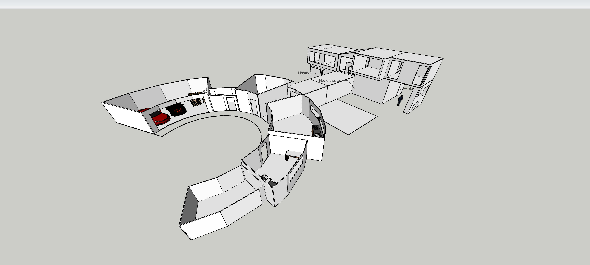
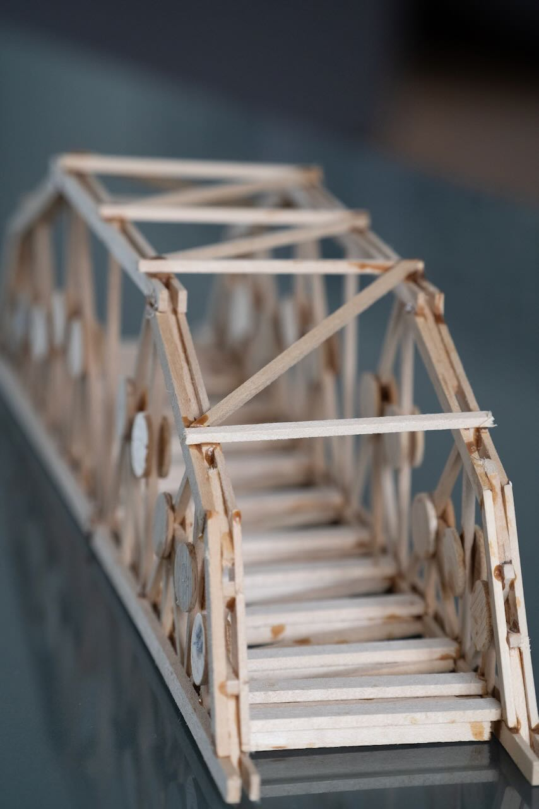
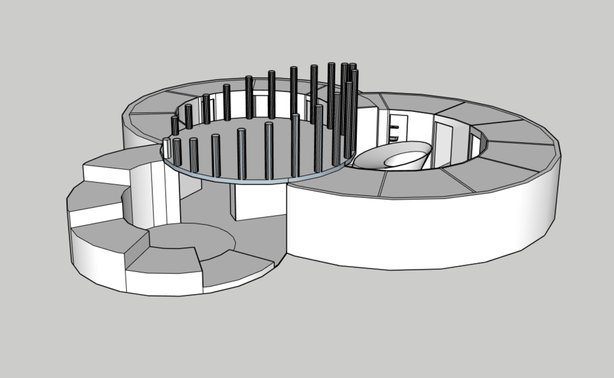

01 / Who I Am
Heidi's Portfolio
I'm Heidi, a student designer and maker who enjoys turning ideas into spaces, objects, and working systems. I learn best by drawing, building, testing, and improving the details one decision at a time.
My interests move between architecture, electronic engineering, sports, and music. Together, they shape how I think: structure gives me clarity, movement gives me energy, and creativity gives me room to explore.
02 / My Interests
Four directions I keep returning to

01ArchitectureSpaces, models, structures, and the ideas that shape how people live. 02Electronic EngineeringCircuits, prototypes, and hands-on experiments with connected systems.
02Electronic EngineeringCircuits, prototypes, and hands-on experiments with connected systems.

03SportsMovement, teamwork, discipline, and the energy of being active.
04MusicRhythm, expression, listening, and the creative life beyond design.03 / Beyond the Projects
The person behind the portfolio
Outside the studio, I value curiosity, practice, and the small routines that make ambitious work possible. Sport teaches me persistence and how to contribute to a team; music gives me another language for mood, timing, and expression.
I'm interested not only in finished results, but in the experiences around them—people I learn from, places that stay in my memory, and everyday moments that reveal something new about how I see the world.
04 / Life in Frames